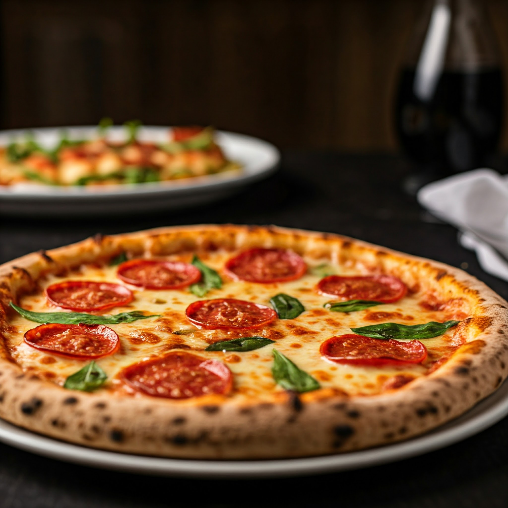

Pizza

Description
This recipe focuses on a basic, delicious pizza that's easy to customize
with your favorite toppings. It uses store-bought dough for convenience
but feel free to make your own if you prefer.
Ingredients
- Dough: 1 pound store-bought pizza dough (or homemade)
- Sauce: 1 cup pizza sauce (store-bought or homemade)
- Cheese: 2 cups shredded mozzarella cheese
-
Optional Toppings: Pepperoni, Mushrooms, Onions, Bell peppers,
Olives, Italian sausage
Steps
-
Prepare the Dough and Preheat: Preheat your oven to 450°F
(232°C). If using a pizza stone, place it in the oven while preheating.
Lightly flour a clean surface and roll out your pizza dough to your
desired thickness and shape.
-
Add Sauce and Toppings:
Spread the pizza sauce evenly over the dough, leaving a small border
around the edge. Sprinkle half of the mozzarella cheese over the sauce.
Add your desired toppings. Sprinkle the remaining cheese over the
toppings.
-
Bake and Serve:
Carefully transfer the pizza to the preheated pizza stone (or a baking
sheet). Bake for 12-16 minutes, or until the crust is golden brown and
the cheese is melted and bubbly. Remove from the oven, let it cool
slightly, slice, and serve.